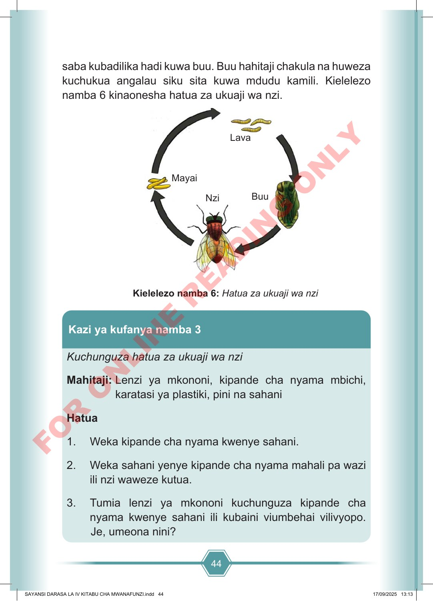

44 saba kubadilika hadi kuwa buu. Buu hahitaji chakula na huweza kuchukua angalau siku sita kuwa mdudu kamili. Kielelezo namba 6 kinaonesha hatua za ukuaji wa nzi. Lava Mayai Nzi Buu Kielelezo namba 6: Hatua za ukuaji wa nzi Kuchunguza hatua za ukuaji wa nzi Mahitaji: Lenzi ya mkononi, kipande cha nyama mbichi, karatasi ya plastiki, pini na sahani Hatua 1. Weka kipande cha nyama kwenye sahani. 2. Weka sahani yenye kipande cha nyama mahali pa wazi ili nzi waweze kutua. 3. Tumia lenzi ya mkononi kuchunguza kipande cha nyama kwenye sahani ili kubaini viumbehai vilivyopo. Je, umeona nini? Kazi ya kufanya namba 3 SAYANSI DARASA LA IV KITABU CHA MWANAFUNZI.indd 44 SAYANSI DARASA LA IV KITABU CHA MWANAFUNZI.indd 44 17/09/2025 13:13 17/09/2025 13:13 F O R O N L I N E R E A D I N G O N L Y